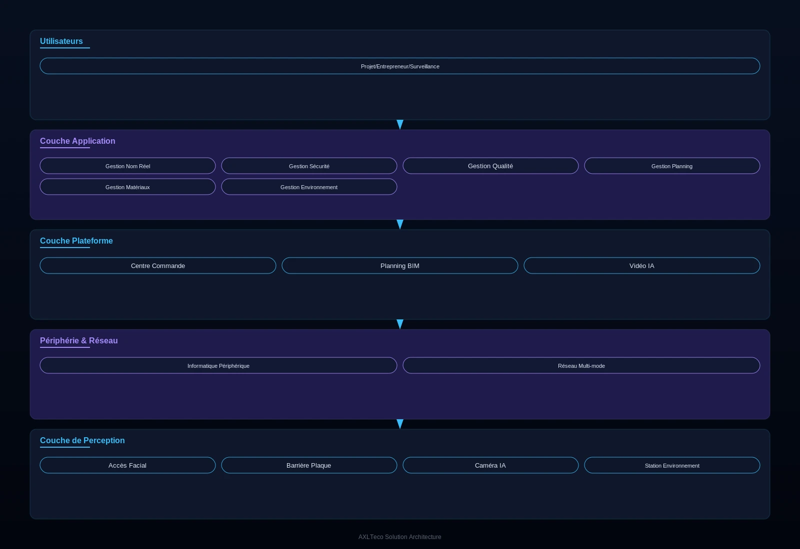

Pour les projets de bâtiment, travaux publics, transport ferroviaire et usines industrielles, une solution de chantier intelligent couvrant six dimensions de gestion - personnel, sécurité, qualité, planning, matériaux, environnement - qui répond aux points de douleur clés que sont la gestion chaotique du personnel, les risques sécuritaires, la traçabilité qualité difficile et le planning hors de contrôle, réalisant un chantier piloté par une seule plateforme.
Vue d'ensemble
Fournit des solutions de chantier intelligent couvrant six dimensions de gestion - personnel, sécurité, qualité, planning, matériaux, environnement - pour les projets de bâtiment, travaux publics, transport ferroviaire et usines, répondant à la gestion chaotique, aux risques, à la traçabilité difficile et au planning hors de contrôle, et réalisant le pilotage du chantier par une seule plateforme.
Applicable à : Projets de bâtiment, travaux publics, transport ferroviaire, usines industrielles.
- Exactitude de l'analyse visuelle IA maintenue à un niveau élevé lors des tests terrain
- Collaboration multi-terminaux couvrant tous les rôles du projet
- Véritable gestion unifiée sur les six dimensions
Bénéfices : Taux d'accidents réduit de plus de 40 %, retards réduits de 25 %, gaspillage de matériaux réduit de 15 %.
Défis Métier
Sur les chantiers de génie civil, les clients font souvent face à une gestion du personnel chaotique, des risques sécuritaires, une qualité difficile à tracer et un calendrier opaque ; ils ont besoin d'une plateforme unique gérant ensemble personnel, sécurité, qualité, calendrier, matériaux et environnement.
Gestion du personnel chaotique
Le fort turnover des ouvriers complique l'enregistrement nominatif ; les pointés sont fastidieux et les litiges salariaux fréquents.
Risques sécuritaires omniprésents
Fouilles profondes, coffrages hauts et grues à tour portent des risques élevés ; les inspections papier rendent le suivi des dangers difficile.
Qualité difficile à tracer
Les registres de recette sont dispersés ; les responsabilités sont floues et les reprises manquent de suivi en boucle fermée.
Calendriers opaques
L'avancement dépend de rapports manuels ; les dérives surgissent tard et les retards s'accumulent.
Six dimensions, une plateforme
Personnel, sécurité, qualité, calendrier, matériaux et environnement doivent se gérer dans un seul système.
Conscience numérique du chantier
La vision IA et la surveillance environnementale doivent exposer les dangers en temps réel et boucler leur traitement.
Scénarios typiques :
Rôles concernés : Chefs de projet, responsables sécurité, contrôleurs qualité, chefs d'équipe, ingénieurs superviseurs.
Architecture
Conçue sur une architecture à trois niveaux « centre de commandement – chantier – front de travail » couvrant six dimensions de gestion (personnel, sécurité, qualité, calendrier, matériaux, environnement), avec intégration aux systèmes BIM et aux sous-systèmes de vidéosurveillance et de pointage d'accès.

Les trois niveaux convergent du bas vers le haut : le front de travail tient les rapports quotidiens et l'inspection, le chantier collecte personnel, véhicules et environnement, et le centre de commandement suit l'avancement, les alertes sécurité et les pointés de chaque chantier.
Modules clés
Gestion nominative du personnel
Accès par reconnaissance faciale et statistiques de pointé pour imposer l'enregistrement nominatif et réduire les litiges salariaux.
Gestion de la sécurité
Les caméras IA détectent les manquements et alertent automatiquement ; les reprises de dangers sont suivies jusqu'à leur clôture.
Gestion de la qualité
Inspection, recette du premier ouvrage et reprises numérisées pour des responsabilités traçables.
Gestion du calendrier
Avancement prévu/constaté visible en temps réel avec alertes précoces de dérive.
Gestion des matériaux
Contrôle numérique des entrées, sorties et consommations pour réduire le gaspillage.
Gestion de l'environnement
Surveillance en ligne poussières et bruit avec aspersion automatique en cas de dépassement.
Capacités d'intégration :
- Les données de tous les sous-systèmes convergent vers le tableau de bord du centre de commandement
- Les caméras IA détectent les manquements de sécurité et alertent en temps réel
- Le dépassement environnemental déclenche automatiquement l'aspersion anti-poussière
- Liaison BIM pour une visualisation 3D de l'avancement
Avantages & Livraison
Avec des années de pratique projet en conception intégrée de chantier intelligent à six dimensions, nous livrons de la valeur managériale — moins d'accidents et moins de dérives de calendrier — via un déploiement local, une formation multi-terminaux et une exploitation continue.
Avantages différenciants
Analyse visuelle IA
La vision IA maintient une exactitude élevée lors des tests terrain et reconnaît automatiquement les manquements.
Six dimensions intégrées
Une véritable gestion unifiée du personnel, de la sécurité, de la qualité, du calendrier, des matériaux et de l'environnement.
Collaboration multi-terminaux
Mini-programme WeChat, web PC, tableau TV, application et H5 couvrent tous les rôles du projet.
Valeur client : Taux d'accidents réduit de plus de 40 %, dérives de calendrier réduites de 25 %, gaspillage de matériaux réduit de 15 %.
Processus de mise en œuvre
Étude des besoins
Cartographier les priorités de contrôle et les installations existantes du chantier.
Conception de la solution
Produire le plan de déploiement et d'intégration à six dimensions.
Déploiement matériel
Installer portiques d'accès, caméras et stations environnementales.
Configuration de la plateforme
Configurer organisation, workflows et règles d'alerte.
Intégration des systèmes
Faire converger les données des sous-systèmes et relier le BIM.
Formation & passation
Formation multi-terminaux et recette au démarrage.
Exploitation continue
Accompagnement à distance et montées de version continues.
Garanties de service : Garantie d'un an, accompagnement à distance, montées de version continues de la plateforme.
Études de Cas
Le client suivant a atteint la gestion du chantier sur plateforme unique grâce à cette solution.
Système de gestion de chantier intelligent pour le Service fédéral des recettes intérieures (FIRS) de Lagos
Contexte : Le projet de construction des bureaux du Service fédéral des recettes intérieures (FIRS) à Lagos, au Nigéria.
Défi : Des mouvements de personnel fréquents et des registres de sécurité papier privaient l'équipe projet d'une gestion numérique unifiée.
Solution : Déploiement d'une plateforme de gestion de chantier intelligent couvrant personnel, sécurité, qualité, calendrier, matériaux et environnement.
Résultats : Le système fonctionne de manière stable sur le projet, réduisant le taux d'accidents et les dérives de calendrier.